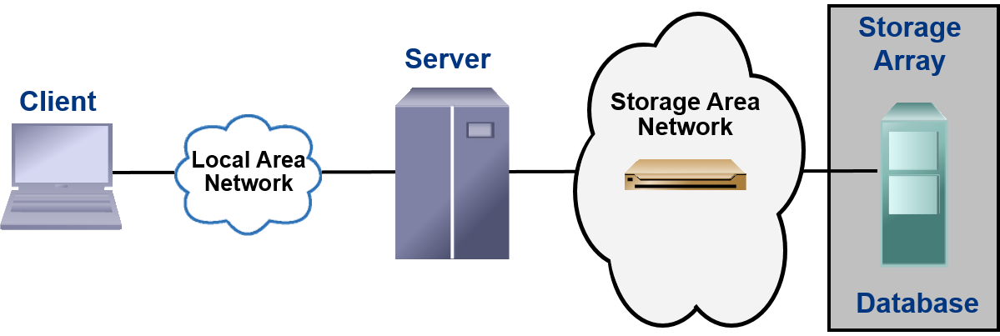

INTRODUCTION TO INFORMATION STORAGE MANAGEMENT:
Review data creation and the amount of data being created and understand the value of data to a business.
LECTURE OBJECTIVE:
- Describe the importance of information to individuals and to businesses.
- Define data and information.
- Discuss the categories of data.
- Describe the storage architectures and their evolution.
WHY INFORMATION MANAGEMENT?
- “Digital universe – The Information Explosion”.
- 21st Century is information era .
- Information is being created at ever increasing rate.
- Information has become critical for success.
- We live in an on-command, on-demand world.
- Example: Social networking sites, e-mails, video and photo sharing website, online shopping, search engines etc.
Information management is a big challenge:
What is Data?
Most data is being converted into a digital format:
Driven by user demand
Facilitated by
- Increase in data processing capabilities
- New and cheaper peripherals
- Lower cost and increased speed of storage
- Affordable and faster networks.
Who creates data?
- Individuals
- Businesses
Categories of Data
- Data can be categorized as either structured or unstructured data
- Structured:
- Data Bases
- Spread Sheets
- Unstructured
- Forms
- Images
- Audio
- Movies
- Over 80% of enterprise Information is unstructured.
Define Information?
What do individuals/businesses do with the data they collect?
- They turn it into “information”
- " Information is the intelligence and knowledge derived from data”
- Businesses analyze raw data in order to identify meaningful trends
- For example:
- Buying habits and patterns of customers
- Health history of patients.
Virtuous cycle of information:

Value of Information to a Business:
- Creating a competitive advantage
- Identifying new business opportunities
- Buying/spending patterns
- Internet stores, retail stores, supermarkets
- Customer satisfaction/service
- Tracking shipments, and deliveries
- Identifying patterns that lead to changes in existing business
- Reduced cost
- Just-in-time inventory, eliminating over-stocking of products, optimizing shipment and delivery
- New services
- Security alerts for “stolen” credit card purchases
- Targeted marketing campaigns
- Communicate to bank customers with high account balances about a special savings plan
Storage

- Data created by individuals/businesses must be stored for further processing
- Type of storage used is based on the type of data and the rate at which it is created and used
- Examples:
- Individuals: Digital camera, Cell phone, DVD’s, Hard
- Businesses: Hard disk, external disk arrays, tape library
- Storage model: An evolution
- Centralized: mainframe computers
- Decentralized: Client – server model (Data spread across many servers
Storage Technology and Architecture Evolution
Challenges in Data Storage and Management
Upon completion of this lecture, you will be able to:
- List the five core elements of a data center infrastructure
- Describe the requirements of storage systems for optimally supporting business activities
- Explain the importance of Information Lifecycle Management
- List the activities in developing the ILM strategy
The Core Elements
- Applications
- Databases – Database Management System (DBMS) and the physical and logical storage of data
- Servers/Operating systems
- Networks (LAN and SAN)
- Storage arrays
Example of a Data Center Infrastructure
Consider an order processing system consisting of:
- Application for order entry
- Database Management System (DBMS) to store customer and product information
- Server/Operating System (OS) on which the application and database programs are run
- Connectivity between Clients and the Application/Database Server (LAN)
- Connectivity between the Server and the Storage system (SAN)
- Storage Array – database is stored on physical disks in the storage array
- Networks that provide
An Example - Closer Look
APPLICATION USER INTERFACE
A customer order is entered via the Application User Interface on a client
LOCAL AREA NETWORK
The client accesses the server over a Local Area Network
SERVER
- A DBMS uses the operating system on the server to read and write this data to the physical location on a disk
STORAGE NETWORK ARRAY
- A dedicated Storage Area Network provides the communication link between the server and the storage array, and transports the read/write commands and data between the server and the storage array
STORAGE ARRAY
- A storage array receives the read/write commands and data from the server and performs the necessary operations to store the data on the physical disks
Optimal Order Processing Example
- The application should be optimized for fast interaction with the DBMS
- The tables in the database should be constructed with care so the number of read/write operations can be minimized
- The server should have sufficient CPU and memory resources to satisfy application and DBMS needs
- The different networks should provide fast communication between client and server, as well as server and storage array
- The storage array should service the read/write requests from the server for optimal performance
Key Requirements for Data Center Elements
Managing Storage Infrastructure
- Monitoring
- It is the continuous collection of information and the review of the entire data center infrastructure
- Reporting
- It is done periodically on resource performance, capacity and utilization
- Provisioning
- It is the process of providing the hardware, software and other resources needed to run the data center
- Provisioning activities include
- Capacity Planning – ensures that the user’s and the application’s future needs will be addressed in the most cost-effective and controlled manner
- Resource Planning – is the process of evaluating and identifying required resources such as personnel, the facility(site) and the technology
Information Lifecycle Management
A proactive strategy that enables an IT organization to effectively manage the data throughout its lifecycle
- ILM strategy should include the following characteristics.
- Should be integrated with key processes, applications to meet both current and future growth in information.
- Should be under the purview(scope) of the ILM Strategy.
- Should be implemented as a policy and encompass all business applications, processes and resources.
- Should consider all storage platforms and operating systems.
- Should consider the different storage requirements and allocate storage resources based on the information’s value to the business.
- Business-centric
- Centrally-managed
- Policy-based
- Heterogeneous
- Optimized
ILM Implementation
Process of developing ILM strategy includes 4 activities:
- Classifying
- Classifying data and applications on the basis of business rules and policies to enable differentiated treatment of information.
- Implementing
- Implementing policies by using information management tools, starting from the creation of data and ending with its disposal.
- Managing
- Managing the environment by using integrated tools to reduce operational complexity.
- Organizing
- Organizing storage resources in tiers to align the resources with data classes and storing information in the right type of infrastructure based on the information’s current value.
Benefits of Implementing ILM
- Improved utilization
- Simplified management
- Simplified backup and recovery
- Maintaining compliance
- Lower Total Cost of Ownership